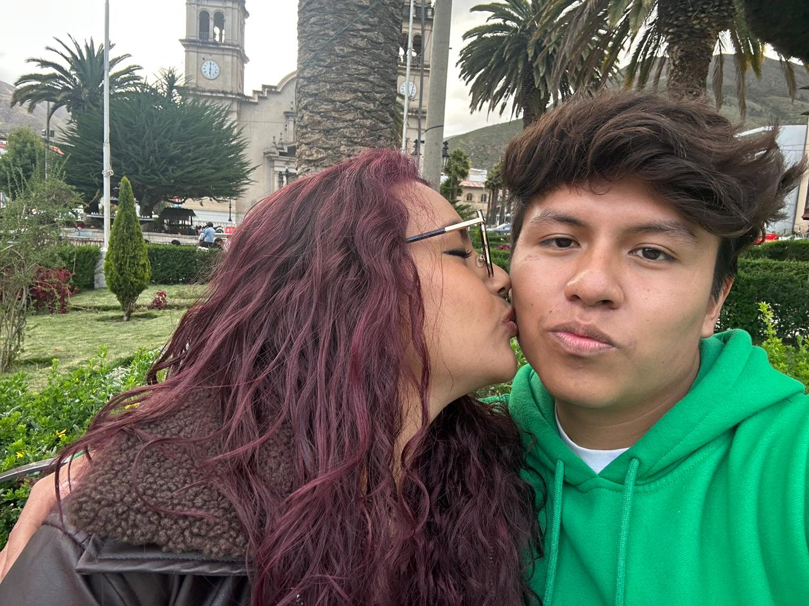
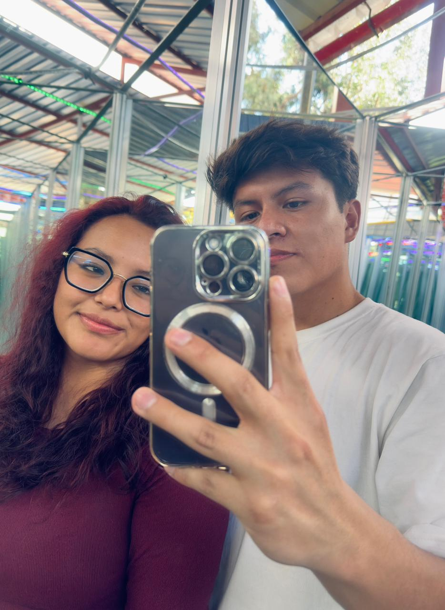
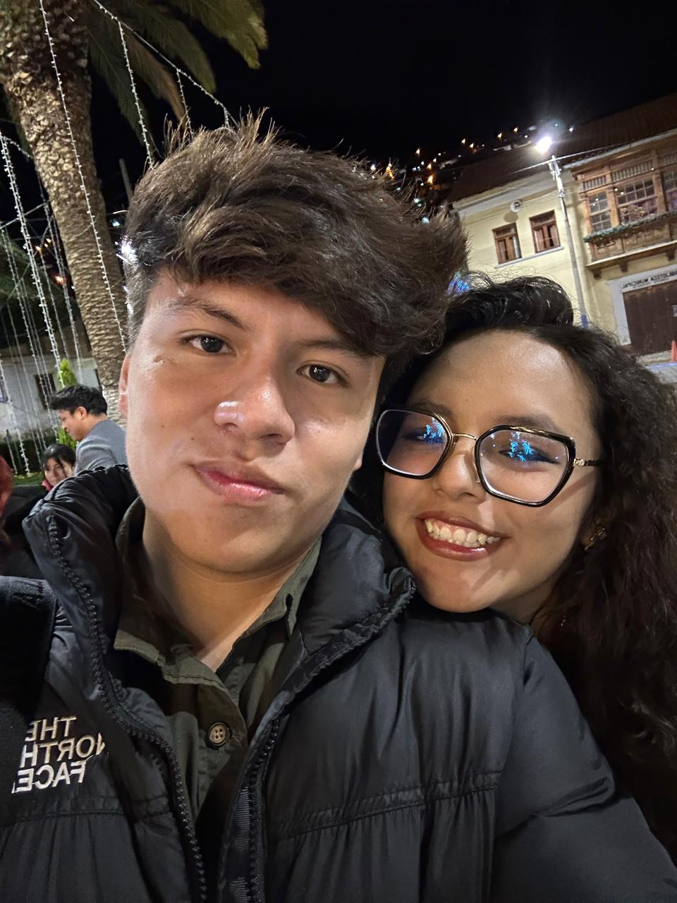

con todo mi amor
Para el amor de mi vida, Alessandra ❤️
✦
Una pequeña sorpresa del corazón
"
Eres como los tulipanes amarillos:
radiante, única e irresistible.
En tus ojos yo
veo mi futuro.
Gracias por existir
y por ser mi vida entera.
✦
— Con todo mi corazón, siempre tuyo 💛
Lo que eres para mí
01
El amor de mi vida
Hoy, mañana y siempre
02
La mujer de mis sueños
única y especial
03
Mi hogar
donde sea que estés
04
Mi todo
para siempre
Razones por las cuales te amo
I
Porque cuando estás tú el mundo se vuelve más bonito y da menos miedo lo que se venga.
II
Porque tú me impulsas a ser mejor siempre y darte todo lo mejor de mí.
III
Porque me veo en un futuro juntos formando un hogar bonito.
IV
Porque a mis ojos eres la mujer más hermosa y única del mundo mundial.
Nuestros momentos ✦

Siempre juntos 💛
Tú y yo ✦
Para siempre 🌷